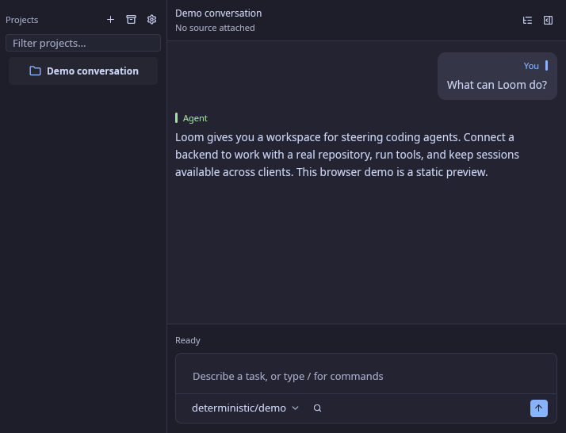

Loom is a remote-first coding-agent environment.
A Rust backend owns agent sessions, tool execution, workspace state, and model integrations. A GPUI client runs natively or in the browser and attaches to a local or remote backend.
Loom is pre-1.0, so interfaces, configuration, and on-disk state can change between releases. The security and trust model describes what a worker can reach and what it stores; read it before using Loom with sensitive data or exposing it beyond a trusted boundary.

What it does
- Runs agent sessions that belong to the backend, so they survive disconnects, reconnects, and restarts.
- Gates tool use behind approval, with workspace, diff, and task review.
- Connects to OpenAI, DeepSeek, OpenAI-compatible endpoints, Ollama, and GitHub Copilot.
- Runs child agents on isolated worktrees.
- Keeps a project goal, set with
/goal, that the agent receives on every run.
Clients and backend
The native app embeds a worker, so it can run a session without a separate server. The browser client is the same GPUI interface compiled to WebAssembly; it connects to a backend over the Loom protocol. Either client can attach to a backend on another machine.
loom-server is that backend as a standalone process, and loom-cli is a headless client of the same protocol.
Run it
The native client is built with Cargo (Rust 1.99 or newer). From the repository root:
cargo run -p loom-ui -- --demo
cargo run -p loom-ui -- --project /path/to/project--demo starts the client without a provider; the second command opens a project directory. Linux system packages and other build notes are in Build and run.
For browser development, ./scripts/dev-wasm.sh serves a backend and the browser client on loopback. It needs Trunk and the wasm32-unknown-unknown target.
The deterministic demo runs without a backend or a provider credential.
Documentation
License
Loom is open source. Individual crates declare their license in Cargo.toml: the reusable core crates are GPL-3.0-only; loom-protocol and loom-server are AGPL-3.0-only.